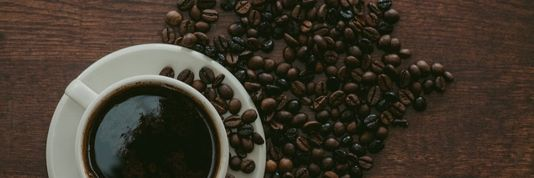
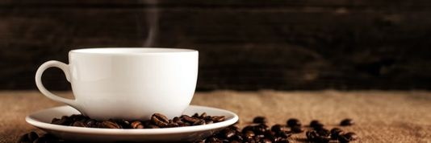
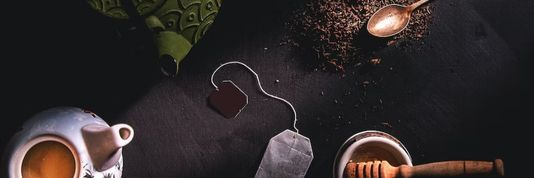

About Us

Q: What is Mediocre's Cafe?
A: Mediocre's Cafe is a coffee shop that offers a variety of coffee and food options in a welcoming and relaxed environment.
Q: Who founded Mediocre's Cafe?
A: The founder of Mediocre's Cafe is no other than a young man who's a big dreamer named "Lance Flores."
Q: What is the mission of Mediocre's Cafe?
A: The mission of Mediocre's Cafe is to provide high-quality coffee and food options in a friendly and welcoming environment.
Our Menu

Q: What type of coffee does Mediocre's Cafe serve?
A: Mediocre's Cafe offers a variety of coffee options, including espresso drinks, drip coffee, cold brew, and more.
Q: Does Mediocre's Cafe serve food?
A: Yes, Mediocre's Cafe offers a menu of breakfast items, sandwiches, pastries, and mini bites.
Q: Does Mediocre's Cafe offer any vegetarian or vegan options?
A: Yes, Mediocre's Cafe offers a range of vegetarian and vegan options, including plant-based milk alternatives for coffee drinks.
Our Branches

Q: How many branches of Mediocre's Cafe are there?
A: There are currently 3 branches of Mediocre's Cafe. One is located in Paris France, while 2 are located in Amsterdam.
Q: Where is the nearest Mediocre's Cafe located?
A: The nearest Mediocre's Cafe is located at Oudekerksplein 27, 1012 GX Amsterdam, Netherlands.
Q: Is there any outside seats and parking?
A: Yes, all branches of Mediocre's Cafe have outside seats and large parking areas.
Contact